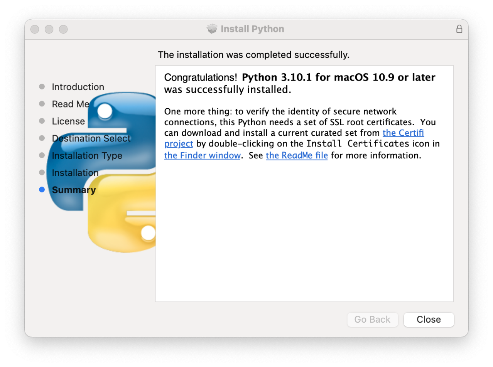

Python installation

In older versions of the operating system (before Monterrey Version 12.3, early 2022), an old system version of Python was installed:
$ /usr/bin/python -V
Python 2.7.18
$ /usr/bin/python
WARNING: Python 2.7 is not recommended.
This version is included in macOS for compatibility with legacy software.
Future versions of macOS will not include Python 2.7.
Instead, it is recommended that you transition to using 'python3' from within Terminal.
Python 2.7.18 (default, Jan 4 2022, 17:47:56)
[GCC Apple LLVM 13.0.0 (clang-1300.0.29.10) [+internal-os, ptrauth-isa=deployme on darwin
Type "help", "copyright", "credits" or "license" for more information.
>>>
This was in fact a link to:
/usr/bin/python@ -> ../../System/Library/Frameworks/Python.framework/Versions/2.7/bin/python2.7
Since this version of Python was only intended for use by the operating system, no pip command
associated with it.
As stated in the warning, newer versions of macOS do not include this Python 2.7 distribution.
In /usr/bin there is a python3 command with a newer version of Python:
$ /usr/bin/python3 -V
Python 3.9.6
$ /usr/bin/python3
Python 3.9.6 (default, Dec 7 2023, 05:42:47)
[Clang 15.0.0 (clang-1500.1.0.2.5)] on darwin
Type "help", "copyright", "credits" or "license" for more information.
>>>
In the same location there is a pip3 command associated with this version of Python:
$ /usr/bin/pip3 -V
pip 21.2.4 from /Applications/Xcode.app/Contents/Developer/Library/Frameworks/Python3.framework/Versions/3.9/lib/python3.9/site-packages/pip (python 3.9)
These pre-installed versions of Python are only intended for use by the operating system,
so they should not be used (and no packages should be installed using pip3).
Therefore, in order to use Python for software developement we need to install other distributions of Python.
PSF Python
In addition to system Python (not to be used) the first Python distribution to install
is that of the PSF. For macOS we will select the
macOS 64-bit universal2 installer (.dmg file).
The installation is simple, and when completed you should see a window similar to this one (depending on the version of Python and of the operating system):

This window includes a message that indicates that a set of SSL root certificates are required.
When clicking in the Install Certificates icon in a Finder window the following command
will run:
$ ./Install\ Certificates.command
-- pip install --upgrade certifi
Collecting certifi
Downloading certifi-2021.10.8-py2.py3-none-any.whl (149 kB)
|████████████████████████████████| 149 kB 4.2 MB/s
Installing collected packages: certifi
Successfully installed certifi-2021.10.8
WARNING: You are using pip version 21.2.4; however, version 21.3.1 is available.
You should consider upgrading via the '/Library/Frameworks/Python.framework/Versions/3.10/bin/python3.10 -m pip install --upgrade pip' command.
-- removing any existing file or link
-- creating symlink to certifi certificate bundle
-- setting permissions
-- update complete
The PSF installation adds the following lines to your .bash_profile:
# Setting PATH for Python 3.12
PATH="/Library/Frameworks/Python.framework/Versions/3.12/bin:${PATH}"
export PATH
The resulting $PATH variable will look similar to:
/Library/Frameworks/Python.framework/Versions/3.12/bin:/opt/local/bin:/opt/local/sbin:/usr/local/bin:/usr/bin:/bin:/usr/sbin:/sbin:/opt/X11/bin
And now we have:
$ command -v python
/Library/Frameworks/Python.framework/Versions/3.12/bin/python
$ python
Python 3.12.1 (v3.12.1:2305ca5144, Dec 7 2023, 17:23:38) [Clang 13.0.0 (clang-1300.0.29.30)] on darwin
Type "help", "copyright", "credits" or "license" for more information.
>>>
In the most recent versions of macOS, after installing the PSF Python,
the commands python and python3 are aliases to the current version (in this example python3.12).
Upgrade pip
When installing the SSL root certificates we obtained a warning that
a newer version of pip was available. To install this new version run:
$ command -v pip
/Library/Frameworks/Python.framework/Versions/3.12/bin/pip
$ pip --version
pip 23.3.1 from /Library/Frameworks/Python.framework/Versions/3.12/lib/python3.12/site-packages/pip (python 3.12)
$ $ python -m pip install --upgrade pip
Requirement already satisfied: pip in /Library/Frameworks/Python.framework/Versions/3.12/lib/python3.12/site-packages (23.3.1)
Collecting pip
Downloading pip-23.3.2-py3-none-any.whl.metadata (3.5 kB)
Downloading pip-23.3.2-py3-none-any.whl (2.1 MB)
━━━━━━━━━━━━━━━━━━━━━━━━━━━━━━━━━━━━━━━━ 2.1/2.1 MB 4.0 MB/s eta 0:00:00
Installing collected packages: pip
Attempting uninstall: pip
Found existing installation: pip 23.3.1
Uninstalling pip-23.3.1:
Successfully uninstalled pip-23.3.1
Successfully installed pip-23.3.2
$ pip --version
pip 23.3.2 from /Library/Frameworks/Python.framework/Versions/3.12/lib/python3.12/site-packages/pip (python 3.12)
In the folder where the python and pip commands are located
(/Library/Frameworks/Python.framework/Versions/3.12/bin) we can find
pip, pip3, and pip3.12. All of them are identical Python scripts.
Install Anaconda
Download the installer from the Anaconda web site. Select the apropriate version: Intel or M1/M2/M3.
After running the installer, the following lines are added to .bash_profile:
# >>> conda initialize >>>
# !! Contents within this block are managed by 'conda init' !!
__conda_setup="$('/Users/antonio/opt/anaconda3/bin/conda' 'shell.bash' 'hook' 2> /dev/null)"
if [ $? -eq 0 ]; then
eval "$__conda_setup"
else
if [ -f "/Users/antonio/opt/anaconda3/etc/profile.d/conda.sh" ]; then
. "/Users/antonio/opt/anaconda3/etc/profile.d/conda.sh"
else
export PATH="/Users/antonio/opt/anaconda3/bin:$PATH"
fi
fi
unset __conda_setup
# <<< conda initialize <<<
The variable $PATH now will look similar to:
/Users/antonio/opt/anaconda3/bin:/Users/antonio/opt/anaconda3/condabin:/Library/Frameworks/Python.framework/Versions/3.10/bin:/opt/local/bin:/opt/local/sbin:/usr/local/bin:/usr/bin:/bin:/usr/sbin:/sbin:/opt/X11/bin:/Library/Apple/usr/bin
With this configuration, each new shell or terminal will activate the Anaconda base environment.
To prevent the activation by default, run the following command:
$ conda config --set auto_activate_base false
This creates a file named .condarc in the $HOME directory with the following line:
auto_activate_base: false
Now, when opening a new shell the variable $PATH will look similar to:
/Users/antonio/opt/anaconda3/condabin:/Library/Frameworks/Python.framework/Versions/3.10/bin:/opt/local/bin:/opt/local/sbin:/usr/local/bin:/usr/bin:/bin:/usr/sbin:/sbin:/opt/X11/bin:/Library/Apple/usr/bin
After making these changes, if you want to activate the base environment type:
$ conda activate [base]
Then the prompt will change to:
(base) $
Periodically update conda:
Install packages with pipx
For some Python packages we are only interested in the commands that they provide, and
we do not need to import their packages or modules. In this case, instead of manually creating
an specific environment for each package and installing it with pip, it is possible to
install it using pipx. Under the hood pipx creates an environment for each package
and makes the commands available via soft links.
First verify if pipx is already available, for example from a recent PSF Python distribution:
$ which pipx
/Library/Frameworks/Python.framework/Versions/3.12/bin/pipx
If it is not available, it can be installed with MacPorts:
$ sudo port install pipx
Examples of packages that can be installed with pipx are:
black: a Python code formatterMkDocs: a package for creating documentation
$ pipx install black
installed package black 21.12b0, installed using Python 3.9.9
These apps are now globally available
- black
- black-primer
- blackd
⚠️ Note: '/Users/antonio/.local/bin' is not on your PATH environment variable. These apps will not be globally accessible until your PATH is updated. Run
`pipx ensurepath` to automatically add it, or manually modify your PATH in your shell's config file (i.e. ~/.bashrc).
done! ✨ 🌟 ✨
The commands installed with pipx (actually soft links to them) are located in
$HOME/.local/bin. Therefore this directory must be added to the $PATH variable
(e.g. modifying .bashrc).
Sometimes a package installed with pipx might require additional packages to add
some features or capabilities. These additional packages must be installed in the specific
environment of the original package. This can be achieved with the runpip option.
For example, to add math capabilities and the Material theme to MkDocs run:
$ pipx runpip mkdocs install python-markdown-math
$ pipx runpip mkdocs install mkdocs-material